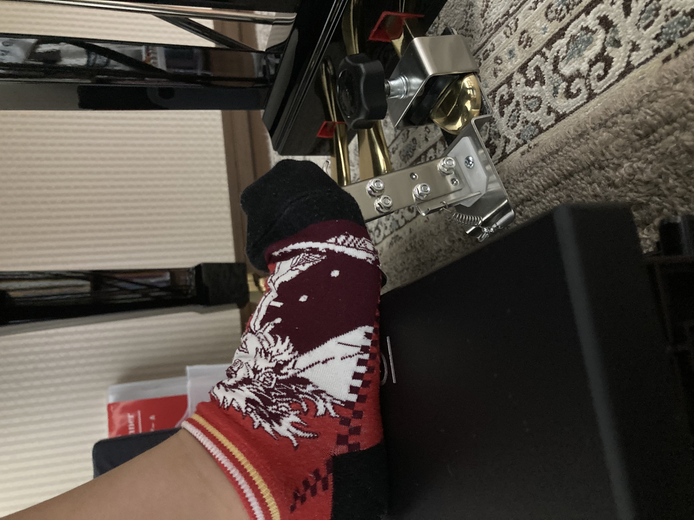

お子さんのピアノお悩みあるある
真ん中の「ド」にサッと指が置けない
鍵盤の位置感覚がつかめず、毎回手探りで探してしまう
「指のお引越し」で迷ってしまう
スムーズな指の移動ができず、演奏が途切れがちになる
「手の形が悪い」と言われる
正しい手の形がわからず、先生に注意されることが多い
「もっと表情豊かに」と言われる
感情を込めて弾こうとすると、技術的にぐちゃぐちゃになってしまう
足元が最も重要なのです
ピアノが上手なお子さんは、弾き始めのフォームができています。でも足元がおぼつかないのに、正しいフォームを作るのには無理があります。
正しい椅子の高さと位置を決め、足台（踏み台）を置くだけで、演奏に天と地の差が生まれます。
ペダルを使わなくてもかかとがしっかり地についていないと、大きな音、小さな音が出せません。（試しに足を宙に浮かせたままピアノを弾いてみれば大人でもこのことが実感できます）

演奏は、足元から指先への連鎖
ピアノは体全体で奏でる楽器。その力の流れを体感しましょう。
土台となる「足」
地に足をつけることで、全身が安定し、余計な力みが抜けます。
バランスの中心「腰」
安定した足元が、体幹である腰を支え、上半身の自由を生みます。
姿勢の土台「肩と背中」
腰からの安定が、腕を自由に動かすための土台となる姿勢を作ります。
力の伝達「腕」
リラックスした肩から、重力を使った自然なエネルギーが腕に伝わります。
しなやかな動きの要「手首」
腕からのエネルギーを柔軟に受け止め、指先への橋渡しをします。
音楽を紡ぐ「指先」
全身からの安定したエネルギーが、繊細で表現力豊かなタッチを可能にします。
この繋がりが、自由な表現と上達を生み出すのです
正しい姿勢で得られる効果
正確な鍵盤感覚
安定した姿勢により、鍵盤の位置感覚が格段に向上し、迷わず正確に演奏できます。
美しい音色
正しい姿勢により音色が劇的に改善され、表現力豊かな演奏が可能になります。
正しいタッチ
効率よく力が伝わり、綺麗なピアニッシモとフォルテが使い分けられます。
疲労軽減
効率的な身体の使い方で長時間の練習でも疲れにくく、集中力を維持できます。
上達速度向上
基礎が固まるため、新しい曲の習得速度が飛躍的に向上します。
ピアノ姿勢診断・無料相談受付中
株式会社トリイ
〒520-1631 高島市今津町名小路1－1
担当：ピアノ営業部